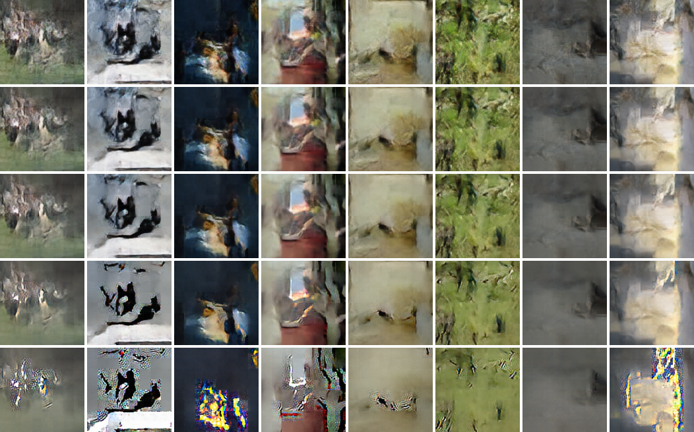

Correction training: samples and FID per number of corrections K
Run: unify-wclamp01-corrector-seed2-inet128-100k, EMA weights, step 100,000.
Blocks 1 to 4 predict the clean image. Blocks 5 to 8 correct that image. The sampler applies the correction K times in each step.
K = 1 is the trained setting. Back to train-viz
FID per K
16 Euler steps, 10,000 samples. Lower is better. Move the pointer over a point for the block evaluations.
Samples per K
Each column is one seed. Each row is one K, 20 Euler steps. This is the grid of the run itself. The grid for K = 0 to 6 replaces it when it is rendered.

All scores
| K | Sampler steps | Block evaluations | FID | KID × 1000 | fd_ae_z | Note |
|---|---|---|---|---|---|---|
| 0 | 16 | 64 | 160.1 | 140.7 | 334 | base denoiser alone |
| 1 | 16 | 128 | 152.3 | 142.6 | 387 | the trained setting |
| 2 | 16 | 192 | 146.0 | 133.1 | 417 | |
| 3 | 16 | 256 | pending | pending | pending | |
| 4 | 16 | 320 | 142.1 | 123.6 | 409 | |
| 5 | 16 | 384 | pending | pending | pending | |
| 6 | 16 | 448 | pending | pending | pending | |
| 8 | 16 | 576 | 155.7 | 117.1 | 522 | |
| 0 | 32 | 128 | pending | pending | pending | same cost as K = 1 at 16 steps |
| 1 | 24 | 192 | 149.6 | 136.9 | 289 | same cost as K = 2 at 16 steps |
| 4 | 8 | 160 | pending | pending | pending | few sampler steps, many corrections |
| 0 | 48 | 192 | pending | pending | pending | many sampler steps |
| 1 | 48 | 384 | pending | pending | pending | many sampler steps |
| 3 | 48 | 768 | pending | pending | pending | many sampler steps |
One sampler step costs 4 + 4 × K block evaluations. The baseline with 8 blocks costs 128 at 16 steps and has FID 136.8.
More corrections in a range of noise levels only
16 Euler steps. The sampler applies 3 corrections at the steps whose noise level is inside the range, and K outside at the other steps. For comparison at 16 steps: K = 0 everywhere 160.1, K = 1 everywhere 152.3, K = 3 everywhere pending.
| Noise levels | K inside | K outside | Block evaluations | FID | KID × 1000 | fd_ae_z | Note |
|---|---|---|---|---|---|---|---|
| 0.7 to 1 | 3 | 1 | 168 | 150.6 | 138.9 | 440 | high noise: the first sampler steps |
| 0.3 to 0.7 | 3 | 1 | pending | pending | pending | medium noise | |
| 0 to 0.3 | 3 | 1 | pending | pending | pending | low noise: the last sampler steps | |
| 0 to 0.2 | 3 | 1 | 152 | 150.0 | 135.9 | 374 | the range of the paper's JiT setting (t 0.8 to 1, t = 1 clean) |
| 0.7 to 1 | 3 | 0 | pending | pending | pending | high noise: the first sampler steps | |
| 0.3 to 0.7 | 3 | 0 | pending | pending | pending | medium noise | |
| 0 to 0.3 | 3 | 0 | pending | pending | pending | low noise: the last sampler steps | |
| 0 to 0.2 | 3 | 0 | pending | pending | pending | the range of the paper's JiT setting (t 0.8 to 1, t = 1 clean) |